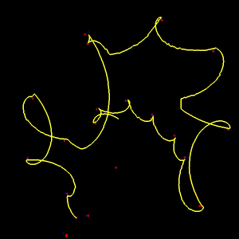

Bearings-only simultaneous localization and mapping (SLAM) is a particularly challenging problem for autonomous mobile robots. The typical approach is to apply the extended Kalman Filter (EKF) to linearize the relationship between robot pose and landmark observations, send the robot off on its merry way and sit back and pray that the filter doesn't diverge due to the highly non-linear observation function.
This work approaches the problem of bearings-only SLAM by taking exploratory trajectories that optimize the stability of the measurement update while maximizing coverage of the unexplored space. These movies demonstrate that the robot can successfully map an unknown environment using an appropriate trajectory, even in the presence of significant observation noise (up to 10 degrees standard-deviation, normally distributed noise).
The exploratory trajectories are as follows:
In all of these runs, the robot has a field of view of 500m. The width of the environment is 2000m. The ground-truth landmarks and robot pose are in blue, the estimated landmarks are in red and the robot's estimated trajectory is yellow. Ignore the wide sweeping red arcs, which correspond to uncertainties associated with undiscovered landmarks (these are distributed at random throughout the environment to drive exploration). Check back here in the future for images that have better contrast.
|  | ||
One more movie, with 5 degree std-dev error and 40 landmarks.
Note that not only does the spiral-based approach successfully converge, but it also successfully closes the loop, a notoriously difficult problem in SLAM.
This results have important implications for a variety of exploratory applications, and in particular vision-based SLAM, where range cannot be directly observed. Clearly, in real-world applications there are a slew of other issues: imperfect data association, the presence of obstacles, etc. However, these results demonstrate that it is valuable (and important) for an exploring robot to collect observations in a principled manner.